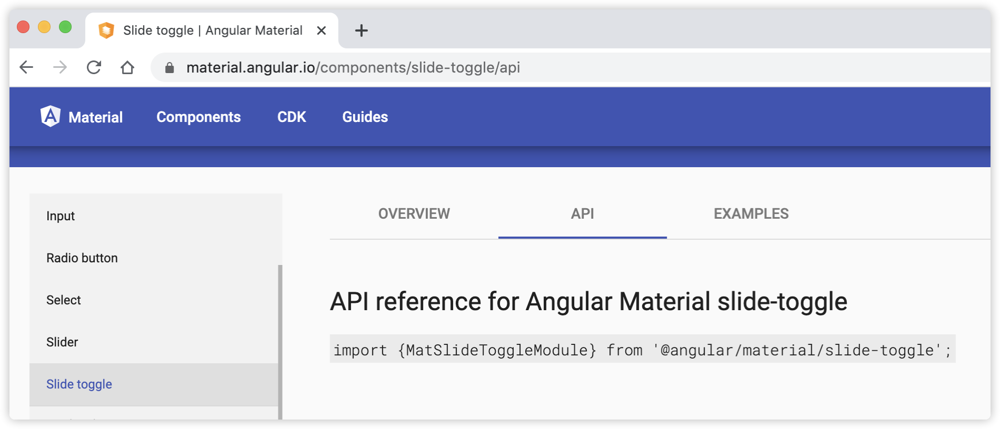
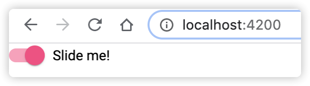
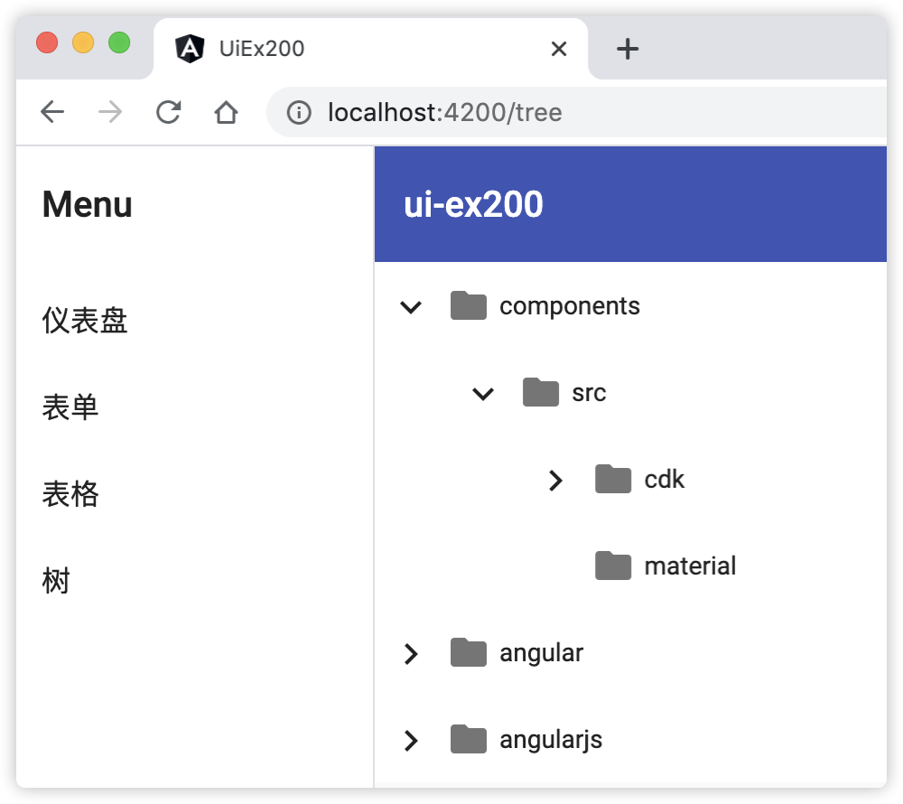
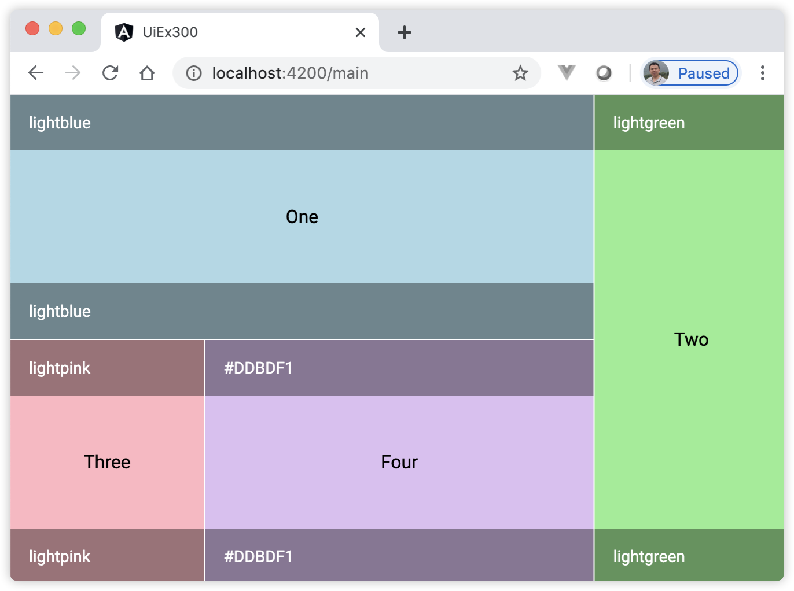

16 Angular与Angular Material组件库¶
Angular是一个完整的框架，在其之上设计了所有的工具和最佳实践。Angular鼓励用户重复使用组件，即将UI拆分成独立的、可重用的部分。
16.1 什么是Angular Material¶
Google公司有一款著名的UI设计语言：Material Design。Angular Material就是基于Material Design语言的设计，同样也是由 Angular 开发团队构建，打造与Angular无缝集成，使用横跨Web、移动端和桌面环境的综合性组件库构建的现代应用组件库。简单的说，Angular Material是Angular官方开发的一款UI组件库产品。
Angular Material 作为 Angular 的官方组件库，无论是设计交互还是易用性都有着极高的质量。其目的就是构建基于 Angular 和 TypeScript 的高质量组件库。Angular Material 还提供了一个组件开发工具包（CDK，Component Dev Kit），CDK 是一组工具库，它代表了 Angular Material 库中一些核心功能的抽象，没有使用任何专属于 Material Design 的样式。可以将 CDK 看做实现了基本功能的组件库，该库中的组件没有样式，CDK的目的就是让用户基于它来开发自定义组件。
因此，Angular Material主要由两部分组成：直接拿来用的组件库和用于开发自定义组件的CDK。
16.1.1 如何安装Angular Material¶
Angular Material是Angular自家的产品，它也随着Angular CLI命令发布。使用如下命令安装Angular Material：
ng add @angular/material
ng add命令安装Angular Material的同时，还安装了它的核心组件开发工具包（CDK）和Angular动画库（Angular Animations），并且询问以下问题来确定要包含哪些功能：
$ ng add @angular/material Installing packages for tooling via npm. Installed packages for tooling via npm. ? Choose a prebuilt theme name, or "custom" for a custom theme: (Use arrow keys) ❯ Indigo/Pink [ Preview: https://material.angular.io?theme=indigo-pink ] Deep Purple/Amber [ Preview: https://material.angular.io?theme=deeppurple-amber ] Pink/Blue Grey [ Preview: https://material.angular.io?theme=pink-bluegrey ] Purple/Green [ Preview: https://material.angular.io?theme=purple-green ] Custom
Angular Material内置了一些主题样式，所谓主题样式可以简单的理解为界面元素的外观和格式。当然了，Angular Material还支持自定义主题。有了主题后，用户可以在此基础上进行快速的开发。 上面的问题提示用户选择一个内置的主题，或者选择 “custom “的自定义主题。从问题答案列表可以看出，Angular Material内置了4个主题，分别是：Indigo/Pink、Deep Purple/Amber、Pink/Blue Grey和Purple/Green，除了这4个内置主题外，还可以通过Custom来扩展已有的主题，让用户自定义适合自己的主题样式。我们默认选择第一个，接着出现下面的问题：
? Choose a prebuilt theme name, or "custom" for a custom theme: Indigo/Pink [ Prev iew: https://material.angular.io?theme=indigo-pink ] ? Set up global Angular Material typography styles? Yes ? Set up browser animations for Angular Material? Yes UPDATE package.json (970 bytes) ✔ Packages installed successfully. UPDATE src/app/app.module.ts (423 bytes) UPDATE angular.json (3163 bytes) UPDATE src/index.html (510 bytes) UPDATE src/styles.css (181 bytes)
上面的问题提示用户是否同意将Angular Material样式设置为全局的样式，以及是否同意为Angular Material设置浏览器动画。我们都输入字母“Y”，表示同意。等待片刻，命令将会成功的安装完成Angular Material。
ng add命令在安装Angular Material的同时，自动完成了以下额外的配置：
在package.json中添加项目的依赖关系；
将Roboto字体添加到首页index.html中；
将Material的设计图标字体添加到首页index.html中；
添加一些全局CSS样式：
删除页面<body>标签中的页边距（margin）；
设置<html>和<body>的样式：“height: 100%”；
设置应用程序默认字体为Roboto。
接下来，我们介绍如何在Angular应用程序中使用Angular Material。
16.1.2 如何使用Angular Material¶
Angular Material组件库中提供了许多组件，打开官方网站，找到显示组件（components）的页面，下面我们选取一个组件作为代表，演示如何使用Angular Material。
我们选取滑块开关组件，详细步骤如下：
将滑块开关组件的模块添加到NgModule类的imports数组中。打开Angular Material官方网站，找到滑块开关组件的API页面，如图16-1所示：
图16-1 滑块开关组件API页面
按照API页面中的提示，将滑块开关组件的模块添加到NgModule类的imports数组中，参阅如下代码：
import { BrowserModule } from '@angular/platform-browser'; import { NgModule } from '@angular/core'; import { MatSlideToggleModule } from '@angular/material/slide-toggle'; // 导入滑块开关模块 import { AppComponent } from './app.component'; import { BrowserAnimationsModule } from '@angular/platform-browser/animations'; @NgModule({ declarations: [ AppComponent ], imports: [ BrowserModule, BrowserAnimationsModule, MatSlideToggleModule // 滑块开关模块 ], providers: [], bootstrap: [AppComponent] }) export class AppModule { }
{kind=link}
在组件模块中使用滑块开关组件。还是在官方网站的同一个页面，切换到OVERVIEW面板，接着打开下面的HTML代码面板，如图16-2所示：
import { Component } from '@angular/core'; @Component({ selector: 'app-root', template: ` <mat-slide-toggle>Slide me!</mat-slide-toggle> `, styles: [] }) export class AppComponent { title = 'ui-ex100'; }
{kind=link}
观察应用程序页面，点击滑块开关，页面显示效果如图16-3所示：
图16-3 滑块开关控件
{kind=link}
至此，我们已经学会如何使用Angular Material中的滑块开关组件，其他组件的使用方法与此相似，不同的是各组件的属性和方法。
从上面的步骤2中看出，每添加一个Angular Material的组件，就需要往NgModule类的imports数组中导入相应的模块，而且各组件之间也有相互的依赖关系，比如步进器组件模块（MatStepperModule）依赖图标组件模块（MatIconModule），而且Material的组件有很多，随着项目UI的增加，NgModule类中不得不继续导入其他的Material组件模块。
在实践中，一般是单独创建一个Moudle来引入Angular Material的组件模块。下面通过示例演示使用Angular Material的最佳实践。
16.1.3 [示例 ui-ex100] 使用Angular Material的最佳实践¶
用Angular CLI构建应用程序，具体命令如下：
ng n ui-ex100 -S --routing --interactive=false
启动服务，具体命令如下：
ng serve
查看应用程序结果。打开Web浏览器并浏览到 “http://localhost:4200”，应该看到文本 “Welcome to ui-ex100!”。
安装 Angular Material，具体命令如下：
ng add @angular/material --defaults=true # defaults=true表示问答时选择默认值
新建Material模块，具体命令如下：
ng g m material --flat # flat参数表示让该模块位于根目录下
编辑Material模块，编辑文件src/app/material.module.ts，并将其更改为以下内容：
import { NgModule } from '@angular/core'; import { MatSlideToggleModule } from '@angular/material/slide-toggle'; const materialModules = [ MatSlideToggleModule, // 新的Module在这里添加 ]; @NgModule({ imports: [ ...materialModules ], exports: [ ...materialModules ], }) export class MaterialModule { }
编辑模块。编辑文件src/app/app.module.ts，并将其更改为以下内容：
import { BrowserModule } from '@angular/platform-browser'; import { NgModule } from '@angular/core'; import { AppRoutingModule } from './app-routing.module'; import { AppComponent } from './app.component'; import { BrowserAnimationsModule } from '@angular/platform-browser/animations'; import { MaterialModule } from './material.module'; @NgModule({ declarations: [ AppComponent ], imports: [ BrowserModule, AppRoutingModule, BrowserAnimationsModule, MaterialModule // 这里是关键点 ], providers: [], bootstrap: [AppComponent] }) export class AppModule { }
编辑组件模板。编辑文件src/app/app.component.html，并将其更改为以下内容：
<mat-slide-toggle>Slide me!</mat-slide-toggle>
观察应用程序页面，页面显示效果与图16-3的效果一模一样。
在上面的示例ui-ex100中的关键点是：创建了一个单独的Material模块。这个模块用来放置所有与Material组件相关的模块，然后在AppModule中导入Material模块，这样在整个应用中都可以使用Material组件的功能了。
注意
在实践过程中，Angular Material的组件有很多，随着版本的迭代，上面示例仅演示导入了一个滑块开关模块。因此，读者在实践时，如果遇到没有导入的模块，需要手动自行添加。
16.1.4 使用Angular Material的生成器快速创建组件¶
Angular Material还提供了一些生成器，用于快速的生成Material Design的组合组件，这些命令如下：
生成Material Design的组合组件的生成器¶ 生成器
说明
address-form
创建一个表单组，它使用多个表单控件接收一个送货地址
navigation
创建一个带有响应式的侧边栏组件和一个用于显示应用名称的工具栏组件
dashboard
创建一个仪表盘页面，并且带有多个卡片和菜单的网格式布局组件
table
生成一个支持排序和分页的数据表组件
tree
生成一个树结构的组件
以生成器“address-form”为例，使用命令的格式如：
ng generate @angular/material:address-form <component-name>
使用其他命令的格式以此类推，仅需将address-form换成上表中对应的生成器名称。另外Angular CDK也提供了一个生成器命令：
ng generate @angular/cdk/drag-drop <component-name>
上述命令，将创建一个带有 CDK 拖放指令的组件。
下面，我们通过具体的示例演示Angular Material的生成器命令的使用。
16.1.5 [示例 ui-ex200] 使用Angular Material的生成器命令¶
用Angular CLI构建应用程序，具体命令如下：
ng n ui-ex200 -S --routing --interactive=false
启动服务，具体命令如下：
ng serve
查看应用程序结果。打开Web浏览器并浏览到 “http://localhost:4200”，应该看到文本 “Welcome to ui-ex200!”。
安装 Angular Material，具体命令如下：
ng add @angular/material --defaults=true # defaults=true 表示问答时选择默认值
新建Material模块，具体命令如下：
ng g m material --route main --module app注意，上述命令中附带的参数含义说明如下：
“–route” 选项告诉Angular CLI命令，新建一个延迟加载的特性模块，并且不需要在根模块中对其引用；route选项参数“main”表示将生成一个path为main的延迟加载路由，并且将其添加到以 –module 选项指定的模块中，具体的位置是添加到该模块声明的 routes 数组中；命令中的module选项参数“app”表示在指定的模块文件（省略了扩展名，指的是app.module.ts模块文件）中添加延迟加载路由的配置;
使用生成器命令依次创建组件模块，具体命令如下：
ng g @angular/material:navigation navigation --module material ng g @angular/material:dashboard dashboard --module=material ng g @angular/material:address-form address-form --module=material ng g @angular/material:table table --module=material ng g @angular/material:tree tree --module=material命令中的module选项参数“material”表示在指定的模块文件（省略了扩展名，指的是material.module.ts模块文件）中添加Angular Material模块的配置。上述命令执行完成后，在文件src/app/material.module.ts中将会看到大量的模块和组件类被添加到@NgModul装饰器中。
编辑导航模板，编辑文件src/app/navigation/navigation.component.html，并将其更改为以下内容：
<mat-sidenav-container class="sidenav-container"> <mat-sidenav #drawer class="sidenav" fixedInViewport [attr.role]="(isHandset$ | async) ? 'dialog' : 'navigation'" [mode]="(isHandset$ | async) ? 'over' : 'side'" [opened]="(isHandset$ | async) === false"> <mat-toolbar>Menu</mat-toolbar> <mat-nav-list> <a mat-list-item href="dashboard">仪表盘</a> <!--新增的link--> <a mat-list-item href="address">表单</a><!--新增的link--> <a mat-list-item href="table">表格</a><!--新增的link--> <a mat-list-item href="tree">树</a><!--新增的link--> </mat-nav-list> </mat-sidenav> <mat-sidenav-content> <mat-toolbar color="primary"> <button type="button" aria-label="Toggle sidenav" mat-icon-button (click)="drawer.toggle()" *ngIf="isHandset$ | async"> <mat-icon aria-label="Side nav toggle icon">menu</mat-icon> </button> <span>ui-ex200</span> </mat-toolbar> <!-- Add Content Here --> <router-outlet></router-outlet> <!--新增的路由器出口--> </mat-sidenav-content> </mat-sidenav-container>重点关注上述代码中的注释部分，新增了4个link和1个路由器出口。
编辑Material路由模块。编辑文件src/app/material/material-routing.module.ts，并将其更改为以下内容：
import { NgModule } from '@angular/core'; import { Routes, RouterModule } from '@angular/router'; import { TreeComponent } from '../tree/tree.component'; import { AddressFormComponent } from '../address-form/address-form.component'; import { DashboardComponent } from '../dashboard/dashboard.component'; import { NavigationComponent } from '../navigation/navigation.component'; import { TableComponent } from '../table/table.component'; const routes: Routes = [ { path: '', component: NavigationComponent, children: [ { path: '', redirectTo: 'dashboard', pathMatch: 'full' }, { path: 'dashboard', component: DashboardComponent }, { path: 'address', component: AddressFormComponent }, { path: 'table', component: TableComponent }, { path: 'tree', component: TreeComponent }, ] } ]; @NgModule({ imports: [RouterModule.forChild(routes)], exports: [RouterModule] }) export class MaterialRoutingModule { }
编辑根组件模板。编辑文件src/app/app.component.html，并将其更改为以下内容：
<router-outlet></router-outlet>
编辑根路由模板。编辑文件src/app/app-routing.module.ts，并将其更改为以下内容：
import { NgModule } from '@angular/core'; import { Routes, RouterModule } from '@angular/router'; const routes: Routes = [ { path: '', redirectTo: '/main', pathMatch: 'full' }, { path: 'main', loadChildren: () => import('./material/material.module').then(m => m.MaterialModule) }]; @NgModule({ imports: [RouterModule.forRoot(routes)], exports: [RouterModule] }) export class AppRoutingModule { }
观察应用程序页面，页面显示效果如图16-4所示：
图16-4 使用Angular Material的生成器命令创建的应用
{kind=link}
在上面的示例ui-ex200中，完成了以下内容：
步骤5中新建了一个带路由功能的Material模块，除了根模块外，在本示例中，一共存在2个独立的模块。
步骤6中使用生成器命令依次创建组件模块，都是基于Material模块，应用程序中使用的组件库均在Material模块范围内使用，因此，本示例无需额外的创建一个共享的Material组件库模块；
步骤8中，在Material路由模块的routes数组中配置了1个父子关系的路由节点，将NavigationComponent作为父节点，其他组件作为子节点，因此，在步骤7中，将主路由器出口放置在NavigationComponent组件的模板中；
本示例重点演示的是如何使用Angular Material的生成器命令。生成器的优势在于，自动生成好代码和配置。
16.2 关于WEB页面的布局设计¶
在学习Angular Material 布局前，我们先了解下关于网页布局的流行设计知识。 响应式网页设计（RWD，Responsive Web Design）和自适应网页设计（AWD，Adaptive Web Design）在现阶段非常流行，它们是网页设计中的两种模式，简称：R+A模式，下面分别对它们进行介绍。
16.2.1 什么是响应式页面设计¶
响应式网页（RWD，Responsive Web Design）就是一个网站能够针对多个终端提供不同的显示样式，而不是针对每个终端制作一个特定的版本。 响应式页面就是随着设备属性（如宽高）的变化，网页的布局也随着变化。响应式页面用到的主要技术就是CSS，如：
多使用 max-width、min-width等属性，不硬编码具体的宽度；
使用媒体查询(Media Query)来响应不同屏幕尺寸和分辨率的设备；
多使用流式网格布局。流式布局就是页面元素的宽度按照屏幕进行适配调整。简单来说，就是 HTML 页面中的元素会根据分辨率的不同而变化大小，但位置并不会有任何变化；
多使用相对单位替换绝对单位，如设置宽度可以使用百分值替代px像素值；
使用能够适应比例变化的图片，即图片可伸缩，不固定宽高；
响应式网页带来的优势就是比较灵活，一个页面适应不同终端。从运营和维护的便利性考虑，当网站交互少，功能少，升级不频繁时，建议使用响应式页面设计。如介绍公司的产品，宣传展示之类的网站。
16.2.2 什么是自适应网页设计¶
自适应网页（AWD，Adaptive Web Design）是指页面内容自动适应屏幕大小，指的是页面宽度不固定。自适应页面可以是响应式的，也可以不是响应式的。目前，各种新型设备(手机/平板电脑)、平台和浏览器都需要兼容显示WEB应用程序，需要一种设计兼容所有的设备。自适应网页设计应运而生，它提供不同的布局来为不同的设备提供最好的体验，它代表了一种必然的设计趋势。实现自适应一般是采用如下技术：
使用媒体查询(Media Query)技术，但是仅是针对有限的设备进行设计；
用 Javascript 来操作 HTML 内容；
在服务器端操作 HTML 内容（比如为移动端减少内容，为桌面端提供更多内容）。
自适应网页的理念就是针对不同的设备进行一对一的设计，在不同的终端可能会有不一样的代码结构和体验。从页面个性化多功能方面考虑，当网站功能功能复杂、用户交互频繁、用户量较大，自适应网页设计更合适。如电商类网站，WEB桌面端和移动端为了提供较好的用户体验，针对显示的内容会有取舍。
16.2.3 什么是媒体查询¶
媒体查询是CSS3中引入的一个新特性，它可以使用自定义的“@media”规则，根据一定条件来加载一段特定的CSS样式。 媒体查询可针对不同设备场景使用不同CSS，媒体查询技术的原理：通过匹配不同屏幕设备的特征，让不同特征下的CSS代码生效。
下面示例代码演示媒体查询的用法：
<!DOCTYPE html> <html lang="en"> <head> <title>媒体查询示例</title> <style> @media (max-width: 50em){ body { background-color: red; } } @media (min-width: 50em) and (max-width: 80em) { body { background-color: blue; } } </style> </head> <body></body> </html>
在上面的示例中，完成了以下内容：
CSS样式“background-color”仅在满足“@media”条件时加载；
当屏幕宽度值达到最大50em时，即小于或者等于50em时，页面背景色设置为红色；
当屏幕宽度值位于50em到80em之间时，页面背景色设置为蓝色；
上面示例中的max-width和min-width称为媒体匹配特征（Media Feature），常见的媒体匹配特征如下表所示：
常见的媒体匹配特征¶ 特征名称
说明
max-width
设置屏的最大宽度，表示屏宽小于或等于它的值时生效
min-width
设置屏的最小宽度，表示屏宽大于或等于它的值时生效
width/height
浏览器的宽度和高度
device-width/device-height
移动设备屏幕的宽度和高度
resolution
设备分辨率
orientation（方向）
它有两个值：portrait(纵向)和landscape(横向)
本示例仅是带来读者了解媒体查询。“@media”语法中的“and”称为查询操作符，max-width和min-width的值表示设置屏幕的断点，通过媒体查询的语法，我们可以构造复杂的使用场景。有关媒体查询的详细语法，读者可以自行查阅相关文档。
16.3 使用 Angular Material 的媒体查询设计网页¶
Angular Material 布局模块提供了一些工具来构建响应式用户界面，以响应屏幕尺寸的变化。BreakpointObserver工具类就是其中的一种，该类用于对媒体查询进行求值，并对其变化作出响应。
下面示例代码演示使用Angular Material 布局模块提供的媒体查询，对应着不同设备类型的断点。
import {BreakpointObserver, Breakpoints} from '@angular/cdk/layout'; @Component({...}) class MyComponent { constructor(breakpointObserver: BreakpointObserver) { breakpointObserver.observe([ Breakpoints.HandsetLandscape, // 媒体查询条件 Breakpoints.HandsetPortrait ]).subscribe(result => { if (result.matches) { console.log('匹配上了'); } }); } }
上述代码在执行过程中，当只要其中指定的任何一个媒体查询条件满足时，会执行打印控制台信息。用户可以拉缩浏览器宽度，模拟手持设备竖屏（HandsetPortrait）时，会发现页面控制台打印出文本“匹配上了”。Breakpoints是Angular Material 布局模块提供的设置媒体查询的断点常量类，常见的断点常量如下表所示：
常见设备类型的断点常量¶ 设备类型常量
说明
Handset
手持设备
Tablet
平板电脑
Web
浏览器
WebPortrait
Web 竖屏
WebLandscape
Web 横屏
HandsetPortrait
手持设备竖屏
TabletPortrait
平板电脑竖屏
HandsetLandscape
手持设备横屏
TabletLandscape
平板电脑横屏
16.3.1 学习 Angular Material 的网格列表布局¶
Angular Material的网格列表（MatGridList）采用响应式页面设计模式，纯粹是作为容器布局装饰使用。MatGridList是MatGridListModule类中的一个指令，它的选择器是“mat-grid-list”，即在HTML中的标签为<mat-grid-list>。MatGridList指令渲染的网格列表是一个二维列表，用于把一些单元格按基于网格的布局排列。MatGridList指令的API定义如下：
MatGridList指令的API定义¶ 输入属性
说明
@Input() cols: number
设置列的数量，必需项
@Input() gutterSize: string
设置单元格之间的间隙，默认值为：1px
@Input() rowHeight: string | number
设置行高
关于上述表格中的rowHeight属性，设置行高时，它可以接受3种不同场景下的值：
当设置为固定行高时，它接受一个字符串的高度值（如：100px、50vh），如果省略了单位，即接受一个数值，其默认单位为px；
当设置为宽高比时，该比例表示“列宽:行高”，并须用冒号形式表示（比如 4:3）；
当设置为固定字符串值“fit”时，它表示填充满，这时必须要设置<mat-grid-list>标签容器的高度。
如上所述，MatGridList指令作为容器布局，那么它下面需要有子。MatGridTile指令也是来自MatGridListModule类，它作为MatGridList容器指令的子容器，MatGridTile指令的选择器是“mat-grid-tile“，在Angular Material布局中，MatGridList和MatGridTile指令总是成对出现的。下面是关于MatGridTile指令API的定义说明：
MatGridTile指令的API定义¶ 输入属性
说明
@Input() colspan: number
设置单元格所占的列数，默认为：1
@Input() rowspan: number
设置单元格所占的行数，默认为：1
MatGridTile指令下面又有个子指令：MatGridTileText指令，它里面可以包含<mat-grid-tile-header>和<mat-grid-tile-footer>，分别用来设备单元格的头和脚。
综上所述，MatGridList、MatGridTile和MatGridTileText指令它们之间的关系，用下面的层级标签表示：
<mat-grid-list cols="总的列数"> <mat-grid-tile colspan="单元格占的列数" rowspan="单元格占的行数"> <mat-grid-tile-header>单元格头</mat-grid-tile-header> 内容 <mat-grid-tile-footer>单元格脚</mat-grid-tile-footer> <mat-grid-tile> <mat-grid-tile>……</mat-grid-tile> </mat-grid-list>
下面演示如何使用 Angular Material 的网格列表布局。
16.3.2 [示例 ui-ex300] 使用Angular Material的网格列表布局¶
用Angular CLI构建应用程序，具体命令如下：
ng n ui-ex300 -S --routing --defaults=true
启动服务，具体命令如下：
ng serve
查看应用程序结果。打开Web浏览器并浏览到 “http://localhost:4200”，应该看到文本 “Welcome to ui-ex300!”。
安装 Angular Material，具体命令如下：
ng add @angular/material --defaults=true # defaults=true表示问答时选择默认值
新建Material模块，具体命令如下：
ng g m material --route main --module app
编辑Material模块。编辑文件src/app/material/material.module.ts，并将其更改为以下内容：
import { NgModule } from '@angular/core'; import { CommonModule } from '@angular/common'; import { MaterialRoutingModule } from './material-routing.module'; import { MaterialComponent } from './material.component'; import { MatGridListModule } from '@angular/material/grid-list'; @NgModule({ declarations: [MaterialComponent], imports: [ CommonModule, MaterialRoutingModule, MatGridListModule ] }) export class MaterialModule { }
编辑Material组件。编辑文件src/app/material/material.component.ts，并将其更改为以下内容：
import { Component } from '@angular/core'; export interface Tile { color: string; cols: number; rows: number; text: string; } @Component({ selector: 'app-material', templateUrl: './material.component.html', styleUrls: ['./material.component.css'] }) export class MaterialComponent { constructor() { } tiles: Tile[] = [ { text: 'One', cols: 3, rows: 1, color: 'lightblue' }, { text: 'Two', cols: 1, rows: 2, color: 'lightgreen' }, { text: 'Three', cols: 1, rows: 1, color: 'lightpink' }, { text: 'Four', cols: 2, rows: 1, color: '#DDBDF1' }, ]; }
编辑Material组件模板。编辑文件src/app/material/material.component.html，并将其更改为以下内容：
<mat-grid-list cols="4" class="myGridList" rowHeight="fit" gutterSize="1px"> <mat-grid-tile *ngFor="let tile of tiles" [colspan]="tile.cols" [rowspan]="tile.rows" [style.background]="tile.color"> <mat-grid-tile-header>{{tile.color}}</mat-grid-tile-header> {{tile.text}} <mat-grid-tile-footer>{{tile.color}}</mat-grid-tile-footer> </mat-grid-tile> </mat-grid-list>
编辑Material组件模板样式。编辑文件src/app/material/material.component.css，并将其更改为以下内容：
.myGridList { height: 100%; }
编辑组件模板。编辑文件src/app/app.component.html，并将其更改为以下内容：
<router-outlet></router-outlet>
编辑根路由模板。编辑文件src/app/app-routing.module.ts，并将其更改为以下内容：
import { NgModule } from '@angular/core'; import { Routes, RouterModule } from '@angular/router'; const routes: Routes = [ { path: '', redirectTo: '/main', pathMatch: 'full' }, { path: 'main', loadChildren: () => import('./material/material.module').then(m => m.MaterialModule) } ]; @NgModule({ imports: [RouterModule.forRoot(routes)], exports: [RouterModule] }) export class AppRoutingModule { }
观察应用程序页面，页面显示效果如图16-5所示：
图16-5 使用Angular Material的网格列表布局
{kind=link}
在上面的示例ui-ex300中，完成了以下内容：
步骤5中新建了带路由功能的Material模块，同样，在本示例中，一共存在2个独立的模块，在根模块中通过延迟加载特性加载Material模块；
步骤6中在模块中导入MatGridListModule类，该类负责产生网格列表布局相关的指令；
步骤8中，在Material组件的模板中使用了网格列表的属性：rowHeight=”fit”，同时在步骤9中设置了该容器的高度样式；
通过使用Angular Material的网格列表，用户可以自由的创建响应式的页面布局。
16.4 小结¶
本章带领读者认识Angular Material，介绍了如何使用Angular Material组件库的知识，然后介绍了WEB页面的设计方法，最后通过示例演示如何使用 Angular Material 的媒体查询设计网页。